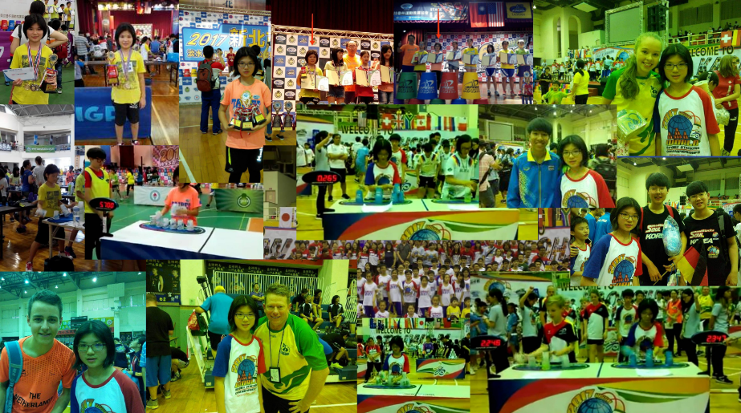
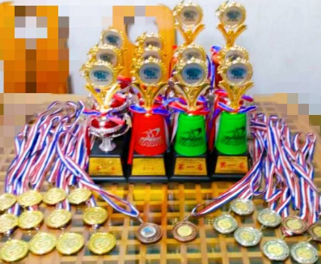

1.訓練手眼協調能力
2.縮短慣用手及非慣用手反應時間
3.提升專注力
4.增加運動量
5.促進團隊合作
6.活化左，右大腦
7 雙邊協調
8.強身
9.開發大腦
10.促始大腦基礎學習
11.手腦並用
12.限運動場地的運動
反覆練習疊杯時間過久，
使特定肌肉或肌腱過度使用，讓手腕、肘部周圍及肩背部，較弱或長時間緊繃的肌群或肌腱容易發生肌腱炎。
可經由適度的暖身運動、正確的運動技巧、調整適當的訓練時間，
不要一次練習過久，並且安排訓練間的休息時間，運動後做伸展緩和運動來加以防範。
據世界競技疊杯聯會規定，運動員需要乎合以下條件方能刷新世界紀錄：
1.必須使用世界速疊杯聯會的專用杯
2.必須使用比賽專用的墊子
3.過程必須錄影作實
4.要在現場裁判見證後，再由競技疊杯總會主審核影片裁判通過
Individuals：
| Event | Gender | Time | Athlete |
|---|---|---|---|
| 3-3-3 | Male | 1.419(s) | Chan Keng Ian |
| 3-3-3 | Female | 1.562(s) | Si Eun Kim |
| 3-6-3 | Male | 1.751(s) | Chan Keng Ian |
| 3-6-3 | Female | 1.903(s) | Si Eun Kim |
| Cycle | Male | 4.843(s) | Chan Keng Ian |
| Cycle | Female | 5.235(s) | Si Eun Kim |
經歷：四年 成就
Best record 冠軍：13次
3-3-3:1.642(s) 亞軍：8次
3-6-3:2.222(s) 季軍：2次
Cycle:5.919(s) 2017世界賽排名：9th

